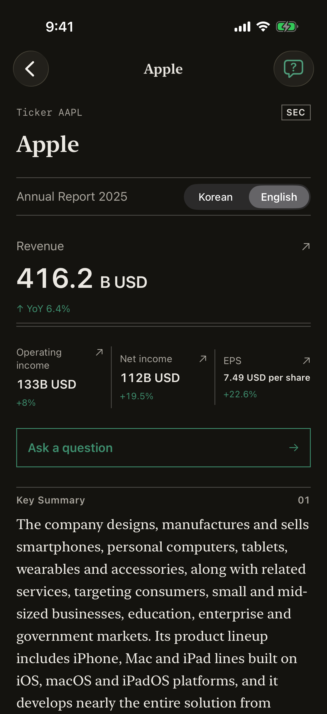
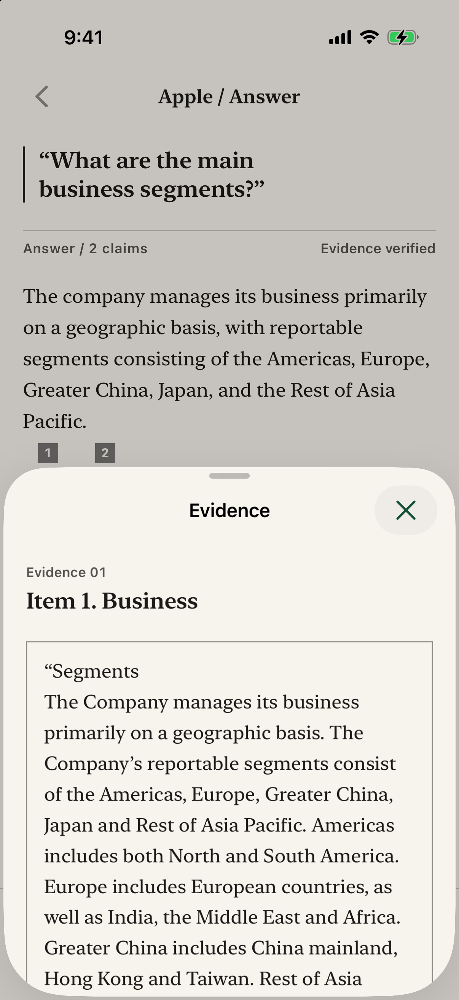

iPhone app · AI · Personal project · Jul–Nov 2026Demo
Filing Digest
Browse key figures from Korean and US company filings and open the original text to check them. Figures and explanations appear together so a company's results are easier to understand.
- Python
- FastAPI
- PostgreSQL · pgvector
- SwiftUI
- 24/24questions passed3 companies
- 18companies23 annual filings
- 519offline tests passed
Why separate figures from AI explanations?
Financial figures come from structured data, and AI explanations are checked separately. On certain generation errors, or when a citation or number check fails, the app hides the explanation and still shows the figures.


Highlights
- Failed check: explanation hidden, figures still shown
- 24/24 baseline questions passed · Oct 3, 2026
How it works
- Filing ingestion
Filings are fetched from DART (Korea's corporate filing system) and the US SEC, and the company, filing, financial figures and text chunks are replaced in one transaction. A unique constraint on the filing's receipt number keeps the same filing from being stored twice.
- Search
Text is split into chunks of up to 1,200 characters and stored as embeddings, then searched by cosine distance on a pgvector HNSW index. Chunks below the 0.42 similarity threshold are not used.
- Explanation
The model is given a JSON schema and returns an explanation with citation numbers. Financial figures come from structured data, not from the model.
- Checks
The app checks that each citation number points to a real chunk and that the explanation contains no financial amounts, percentages or multiples; years and counts are allowed. On failure it hides the explanation and still shows the stored figures.
The public walkthrough is recorded and read-only, with no API calls. Citation ID and financial-expression checks do not establish the accuracy of every sentence.